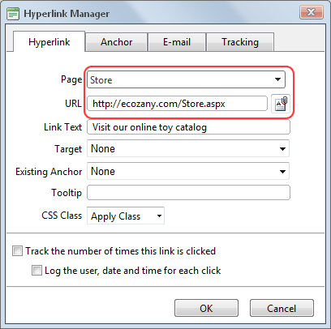

Adding a Page Link
How to insert a link to a page within this site using the TelerikEditorProvider RTE.
- Highlight the text/object for the link - OR - Place you cursor where you want to insert the link.
- Click the Hyperlink Manager (CTRL + K)
 button. This opens the Hyperlink Manager with the Hyperlink tab selected.
button. This opens the Hyperlink Manager with the Hyperlink tab selected.
- At Page, select the page for this link from the drop down list. This displays the URL of the selected page in the URL field below. Note: Disabled pages appear in the list, however they cannot be selected.

- The following optional setting are available:
- In the Link Text text box, edit the linked text. Note: This field is not displayed when adding a link to an image.
- At Target, select the target window for this link. The default option is None which opens the link in the current window.
- In the Tooltip text box, enter a tool tip to be displayed when a user places their mouse over this link.
- At CSS Class, select a class for the link - OR - Select Clear Class to use the default class.
- Check
 the Track the number of times this link is clicked check box to enable Link Tracking for this link. The link must be saved before you can view the Tracking tab where tracking information is displayed.
the Track the number of times this link is clicked check box to enable Link Tracking for this link. The link must be saved before you can view the Tracking tab where tracking information is displayed.
- Check the Log the user, date and time for each click check box to also enable the Link Log.
-
Click the OK button confirm.
Related Topics:
-
See "Viewing a Link Log Report"